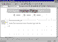

| ||||
When the home page is opened in the FrontPage Editor, note the page elements that have been applied by the FrontPage theme you selected in the previous section: the page has a textured background image, a page banner with the page's title, and a navigation bar with linked buttons pointing to the other pages in the Personal Web.
To add text on the page, simply begin typing as you would in a new word processing document.
The home page of a Web site should have a greeting for your visitors (people that will "surf" to your site after it has been published on the World Wide Web).
Pressing ENTER creates a new paragraph on the page.
You can later replace this text with a personal greeting in your own words, along with a description of what your site has to offer.
Your page should now look like this:

Click image to enlargeDid you find this material useful? Gripes? Compliments? Suggestions for other articles? Write us!
© 1999 Microsoft Corporation. All rights reserved. Terms of use.